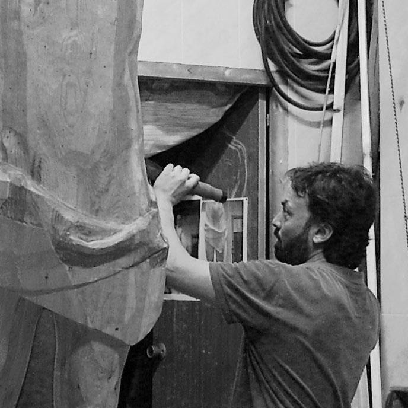

Octavio Llorens Llavata, escultor valenciano, es licenciado en Bellas Artes por la Universitat Politècnica de València y posee un máster en Educación.
Comenzó su formación artística a una edad temprana en diversas escuelas de arte y talleres de escultura en Valencia, posteriormente ampliando sus estudios en Italia perfeccionando su técnica. Su obra se caracteriza por un enfoque figurativo, especialmente en el retrato escultórico. Ha realizado diversas obras públicas en ciudades como Valencia e Italia, entre las que destaca la escultura de San Vicente Ferrer en la Plaza de los Niños de San Vicente Ferrer en Valencia, conmemorando el 600 aniversario del Colegio Imperial Niños Huérfanos de San Vicente Ferrer. Ha participado en exposiciones tanto en España como en Italia, mostrando su obra en espacios culturales de renombre. Entre sus proyectos recientes se encuentran el retrato conmemorativo de Ricardo Samper Ibáñez en el Ateneo Mercantil de Valencia, el retrato póstumo de Alberto Mora en una colección privada y la obra "Mater", reflejando su continuo interés por la figura humana y la expresión emocional.
